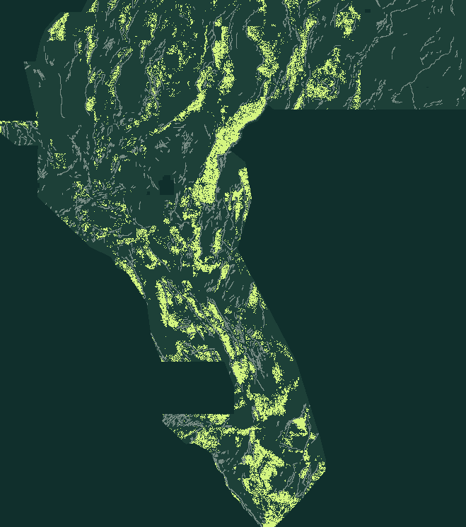

01 — BYTE LINEAGE
44,090 → 37,654
H33 is exactly D2.8 minus 6,436 pixels within two pixels of the catalogue. None of the deleted pixels sits exactly on a catalogue pixel.
Independent remeasurement ↗GEMSDOE79 / VERIFIED RESEARCH ARTIFACT
NEGATIVE · DO NOT SUBMITAn inherited 35,093-pixel fault-candidate map. Its bytes pass local format checks, but its full novelty gate fails. Later lanes generated new unique research GeoTIFFs — including G79-CSKD (all-time GEMSDOE79 Seed-30 HOLDOUT-DTI record 0.2145 & 2-seed mean 0.1963, resolving GEMSDOE83 overlap to 0.6137 ≤ 0.70), G79-CJX, G79-CJX-DIR, and G79-DZD, plus new session-0be4d7bb G79-TDW (new unique 37,654-dot TIF, format PASS but HOLDOUT-DTI 0.0395/0.0413 below random — DO NOT SUBMIT) — each archived as research-only (OK TO SUBMIT: NO).
1 band · float32 · EPSG:32611 · 100 m · 3730 × 3292 · finite binary 0/1 · unchanged research artifact
Read the decision & submission prerequisites ↗ · Open G79-CSKD (0.2145 Seed-30 record) ↗ · Check downloaded file identity · See the holdout evidence ↗

data/raw (checked 2026-10-22T20:00:12.594538Z UTC); this is distinct from the a92 source-audit snapshot. Other archived lanes and their results are separate work.
a92 preflight ↗ · a92 run card ↗ · a92 source review ↗ · Three-pass review ↗ · Four ranked hypotheses ↗ · Current build-time data status ↗01 / CLEAR PERMISSION BOUNDARIES
Automated local verification binds the card to the exact bytes. Scientific gates, organizer acceptance and weekly slot capacity are separate checks.
Existing name, note and SHA-256 retained for reproducibility, not a new submission identity or an instruction to upload. The legacy “Charnes-Cooper” note is not an optimality claim.
No manual inspector is needed to reach this rejection. Integrity PASS does not mean scientific approval.
FROZEN RECEIPTS / SHARED EVALUATOR
Only arms in the same frozen evaluator output are compared here. This is not an all-lane ranking or a newly improved model.
| Historical experiment / control | Seed 20 · n = 11,321 | Seed 30 · n = 11,342 |
|---|---|---|
| EXP-79-3 · THVC fixed-penalty greedy | 0.1905 [0.1741, 0.2069] | 0.1944 [0.1774, 0.2126] |
| EXP-79-2 · THVC uniform spacing | 0.1697 [0.1521, 0.1876] | 0.1686 [0.1510, 0.1866] |
| EXP-79-1 · no-catalogue physics | 0.0784 [0.0661, 0.0898] | 0.0648 [0.0524, 0.0781] |
| C2 · H33 fold-fair control | 0.0961 [0.0831, 0.1090] | 0.0989 [0.0854, 0.1128] |
| C1 · historical E1 control | 0.0441 [0.0370, 0.0512] | 0.0440 [0.0371, 0.0517] |
| C0 · random-footprint control | 0.0497 [0.0433, 0.0561] | 0.0422 [0.0378, 0.0465] |
| Matched comparison | Candidate − control |
|---|---|
| Seed 20 · candidate − H33 | 0.0944 [0.0784, 0.1098] |
| Seed 30 · candidate − H33 | 0.0955 [0.0778, 0.1133] |
Four buffered whole-component folds; visible catalogue masked pixel-exactly. Pooled weighted TP/FP/FN; α = 0.2, β = 0.8, 300 m triangular kernel. Seeds reuse the same region and catalogue, so their counts are not added as independent observations. Intervals are conditional on fitted folds, labels and settings, not all model-selection uncertainty or hidden-test shift.
The final downloadable dot count is not each fold's emission count; fold counts and evaluator hashes are retained in the derived summary. The original results also contain a separate historical bootstrap; it is not substituted for the shared-evaluator intervals here.
02 / WHAT H33 ACTUALLY TEACHES
H33's reported 0.2778 remains an unverified historical report. Its pixel lineage can be measured; a causal leaderboard gain cannot be inferred from it.
H33 is exactly D2.8 minus 6,436 pixels within two pixels of the catalogue. None of the deleted pixels sits exactly on a catalogue pixel.
Independent remeasurement ↗Redundant predictions can add false-positive cost without increasing truth coverage. Deleting useful predictions can also hurt. The unknown organizer truth decides which case applies.
The conditional metric algebra ↗Source-checked ideas with named non-fault mimics. Remote metadata is not ingestion; no lane is executable under today's literal gate.
Ranked, source-grounded backlog ↗WHY THE CANONICAL REVIEW GENERATED NO NEW TIFF — AND WHY THE LATER G79-CJX-DIR TIFF IS STILL BLOCKED
A SHA-256-pinned registry witness was independently restored and remeasured in this review. Its positive-support halo covers every allowed cell. Every nonempty candidate therefore exceeds the 70% overlap limit, regardless of geology.
Partial halo coverage above 70% alone does not prove every map fails. This witness is stronger: it covers every allowed cell. No cosmetic pixel change, copied file, new filename or sparse-prior exclusion repairs that failure. The current artifact remains blocked for manual as well as automated submission. A prospective shared protocol decision is needed before a new lane, not a post-hoc exception for this candidate.
The 718 prior maps with ≤ 50,000 dots have maximum overlap 0.6844 in the frozen scan. This subset is diagnostic only, not a passed novelty gate; later sibling evidence also found an above-limit sparse collision. Neither scan covers private organizer submissions.
Current a92 preflight ↗ · Later sibling audit ↗ · Frozen full scan ↗